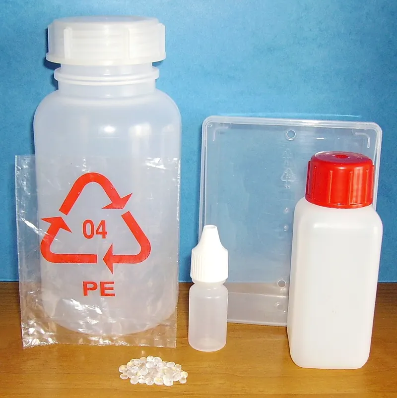

Commodity resinsPP-IM-101
PP Injection Molding Resin
A versatile starting point for rigid, everyday molded components.
- Density
- 0.90 g/cm³ (sample)
- Melt flow index
- 12 g/10 min (sample)
PP-IM / Sample · Illustrative values
Engineered materials. Industrial precision.
Explore polymer materials for modern manufacturing. Find a material family, review sample grades, and bring clarity to your next material conversation.
Commodity resins · Engineering polymers · Films & packaging
 Fig. 01 — Blown film extrusionReference photograph
Fig. 01 — Blown film extrusionReference photograph
Reference photographs · Image credits
01 / The material collection
Six families. Ten sample grades. Explore the materials already featured in this portfolio.
02 / Materials in focus
Illustrative product records from the original catalogue. Specifications require verification with a qualified supplier.
View all materials →Commodity resinsPP-IM-101
A versatile starting point for rigid, everyday molded components.
PP-IM / Sample · Illustrative values
Commodity resinsHD-BM-201
Explore rigid packaging and hollow-form molding applications.
HD-BM / Sample · Illustrative values
Engineering polymersABS-EC-601
A sample engineering material for housings and detailed parts.
ABS-EC / Sample · Illustrative values
03 / Application studies
Example applications only. Suitability depends on grade, processing and validation for the intended use.

01 / Application study
Films, rigid containers and closures.

02 / Application study
Material selection for molded components.

03 / Application study
Appearance, processing and everyday use.
From selection to specification
Gather your material, quantity and application requirements before starting a conversation.
Prepare an enquiry →